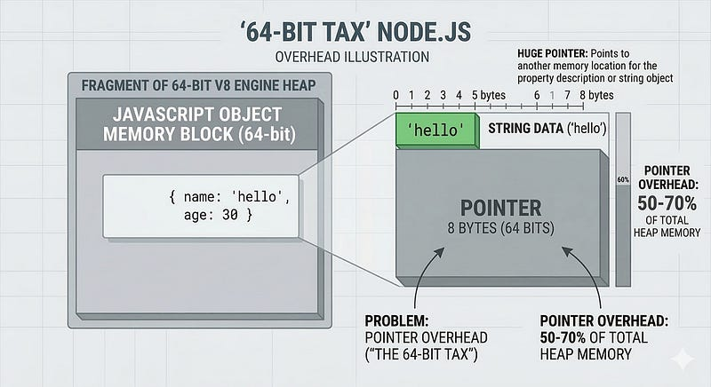
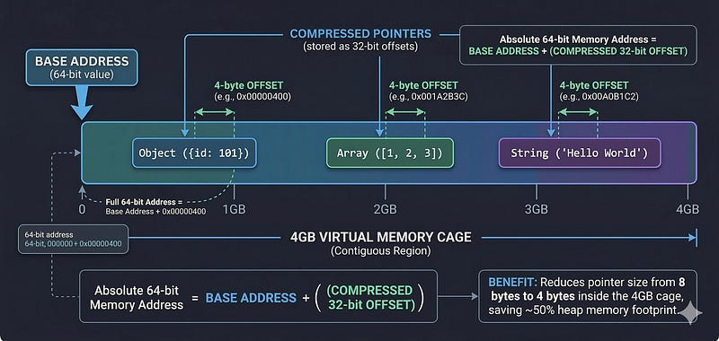

You deploy a simple Node.js microservice. It’s just a basic Fastify or Express API doing some JSON parsing and talking to Postgres. You check your metrics in Grafana, and your jaw drops.
Why is this tiny service hoarding 400MB of RAM?
We usually blame our code. We hunt for memory leaks, swap out NPM packages, or aggressively call the garbage collector. But what if I told you the real memory hog isn’t your bad code?
What if the hidden devil eating your server bill is the architecture of Node.js itself?
Well, the developers at Platformatic recently highlighted a massive shift in how Node handles memory. With Node 25, a feature called Pointer Compression is taking center stage, and it’s literally cutting Node.js memory usage in half.
Here is why your Node apps have been so fat all these years, and how this new update changes everything.
The 64-Bit Tax Nobody Told You About
To understand the fix, you have to understand the flaw.
Under the hood, Node.js runs on V8. Almost all modern servers run on a 64-bit architecture. In a 64-bit world, every time V8 needs to point to a memory location, it uses a 64-bit pointer.
A 64-bit pointer takes up 8 bytes. Doesn’t sound like a big deal, right? But remember, JavaScript is a language built entirely on pointers.
- Objects? Pointers to keys and values.
- Arrays? A list of pointers.
- Closures? Pointers to lexical scopes.
When you load a massive JSON payload or keep thousands of concurrent connections open, your heap gets flooded. You aren’t just storing data; you are storing millions of 8-byte addresses pointing to that data. In heavily object-oriented Node apps, pointers alone can take up 60% of your total heap memory.
You are paying AWS, GCP, or Azure real money just to store connective tissue.

The 50% Hack
This is where Node 25 (and modern V8) pulls off a brilliant trick.
A 64-bit pointer can address 18 exabytes of RAM. Let’s be real, your Kubernetes pod has a 512MB limit. You don’t need 18 exabytes of addressable space.
Pointer Compression is a technique where V8 says, “Let’s stop using massive 64-bit absolute addresses.”
Instead, V8 creates a memory cage, a contiguous chunk of memory. It sets a single base address for this cage. After that, every pointer inside your app is just stored as a 32-bit offset from that base.
Base Address + 32-bit Offset = Your Data.
By doing this, V8 shrinks every single pointer in your application from 8 bytes down to 4 bytes. Your pointers are literally get cut in half.

The Catch
In software engineering, every massive win comes with a trade-off. Because V8 is now using 32-bit offsets, the maximum amount of memory it can address inside that “cage” is exactly 4GB. If your Node application tries to allocate more than 4GB of heap memory, it will crash.
Is this a problem? For 99% of backend engineers, the answer is a resounding no.
If your single-threaded Node.js worker is chewing through more than 4GB of RAM, you don’t have a memory limit problem; you have a system design problem. You should probably be:
- Streaming your data instead of loading it all into memory.
- Pushing heavy state to a database like Redis or Postgres.
- Scaling horizontally with more lightweight pods.
For the vast majority of us building REST APIs, GraphQL servers, and microservices, we will never hit that 4GB ceiling. But we will instantly feel the 40–50% drop in baseline memory usage.
How to Check If You’re Getting the Discount
The best part about this is that it requires zero code changes on your end. It’s an infrastructure-level win. As cloud-native distributions of Node 25 roll out, this compressed pointer build is becoming the standard for environments that don’t need massive heaps.
Want to know if your current Node instance is running with Pointer Compression? You can write a tiny script to check your V8 heap limit.
const v8 = require('v8');
function checkPointerCompression() {
const stats = v8.getHeapStatistics();
// Convert bytes to Gigabytes
const heapLimitGB = stats.heap_size_limit / (1024 * 1024 * 1024);
console.log(`Max Heap Limit: ${heapLimitGB.toFixed(2)} GB`);
if (heapLimitGB <= 4.1) {
console.log("Pointer Compression is likely ENABLED! Enjoy the free RAM.");
} else {
console.log("You are running standard 64-bit pointers.");
}
}
checkPointerCompression();If it spits out something around 4.00 GB, congratulations. You've ditched the 64-bit bloat.
Conclusion
We spend hours tweaking algorithms, arguing over ORMs, and implementing caching layers just to squeeze a little more performance out of our servers.
Sometimes, the biggest bottleneck is just the runtime carrying too much baggage. Pointer compression in Node 25 is a massive quality-of-life update for DevOps and backend engineers. It means higher pod density, fewer Out-Of-Memory (OOM) crashes, and ultimately, cheaper server bills.
Upgrade your runtimes, shrink your limits, and stop paying for 64-bit pointers you don’t need.